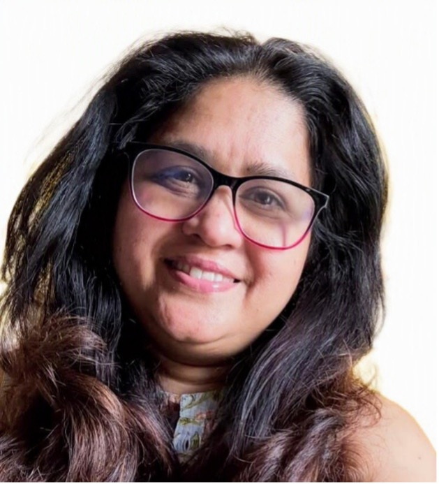

Three disciplines. One practice.
Investigations led by Sreevidya Varma. Systems Diagnostics led by Kavita Khanna. Training delivered by Supriya Menon.

Sreevidya Varma
Sreevidya leads WORQsense's investigations practice. She is an Association of Workplace Investigators Certificate Holder (AWI-CH), the internationally recognised benchmark for workplace investigation competence, reflecting individual expertise, not an organisational certification. awi.org ↗
Her practice spans PoSH Act and Grievance Redressal Committee (GRC) proceedings in India and employment investigations in New Zealand, with a focus on procedural rigour, evidentiary defensibility, and trauma-aware practice. She is also an AMINZ-credentialled mediator, bringing certified conciliation capability where appropriate.
Sreevidya began her investigations practice in India in 2014, conducting investigations for more than 50 organisations as an external investigator and IC member under the PoSH Act. She relocated to New Zealand in 2023 and is building her New Zealand practice while re-entering the India market.
LinkedIn
Kavita Khanna
Kavita Khanna leads WORQsense's systems practice. Over 25 years, she has worked with executive teams and boards across New Zealand, Australia, and India, in engineering, infrastructure, design, technology, and professional services, spanning early-stage ventures to large, multi-layered enterprises navigating transformation.
She is widely regarded for expertise in practical recovery and strategies for workplace risk management. Organisations also engage her for system checks and diagnostics for risk assurance, identifying structural vulnerability before a formal complaint is raised. Her work blends strategic foresight, operational depth, and cultural fluency.
At WORQsense, Kavita leads ReWireWorks, the prevention and diagnostics practice that begins where investigation findings end: turning what the inquiry reveals about structural, cultural, and leadership conditions into the specific changes that reduce recurrence.
LinkedIn
Supriya Menon
Supriya Menon brings ground-level experience of workplace conduct, having served for several years as an Internal Committee (IC) Member and Chairperson. Having managed complex PoSH and workplace-conduct matters firsthand, she brings a practical, real-world perspective to WORQsense's capacity-building work.
A committed advocate for safe, respectful workplaces, and for women's confidence and independence at work, Supriya delivers and facilitates WORQsense's PoSH and workplace-conduct programmes, helping organisations turn compliance obligations into everyday behaviour.
LinkedInDaren Jay
For specialist investigative interviewing training, WORQsense partners with Daren Jay and Interview Management Solutions (IMS), Australia. Over 30 years in law enforcement and government investigations, and a UK Home Office Investigative Interview Trainer since 1996. Lecturer in Policing at Charles Sturt University. Has trained investigators for the World Bank Group, European Investment Bank, the Australian Taxation Office, and Westpac.
In 2013, Daren designed and built TILES, the world's first investigative interview management software, making interview skill observable and measurable.
Investigations-first. Systems-intelligent.
Most investigation practices stop at the finding. Most systems practices do not touch the investigative record. WORQsense holds both disciplines, not because it is comprehensive, but because the work demands it.
Proven to standard.
The investigation establishes what happened, to what standard of proof, and with what procedural integrity. Built to survive challenge.
InvestigationsThe conditions behind it.
ReWireWorks reads what the investigation reveals about structural, cultural, and leadership conditions, and builds prevention from what the inquiry actually found.
ReWireWorksFour commitments. Every engagement.
Defensible
Every investigation is built to withstand challenge in court, on appeal, and under procedural review. Investigative rigour is the floor, not the ceiling.
Independent
True independence means no advisory role, no prior relationship, no conflicting position. Being willing to find what the evidence requires, including findings that are unwelcome.
Trauma-aware
Investigative practice that does not account for the impact of trauma on memory, disclosure, and credibility produces unreliable evidence and harms participants. It is also procedurally inadequate.
Precise
Clear language, honest scope, proportionate conclusions. No inflated findings, no hedged non-findings, no recommendations that exceed what the evidence supports.
Standards we hold ourselves to.
- Association of Workplace Investigators
- Human Resources New Zealand
- Asia Pacific Federation of Human Resource Management
- International Investigative Interviewing Research Group
Every engagement starts with a conversation.
Independent investigation, capability training, or systems diagnostics for diligent prevention of harassment, tell us what the situation calls for.